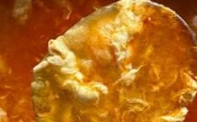

Comida tradicional
alicantina
‹ Todas las recetas
Sopa de ajo

Ingredientes
4 dientes de ajo
Chorizo y/o jamón en tacos
Pan duro o tostado
1 huevo
3 hojas de laurel, 1 cucharadita de pimentón dulce y/o picante, ½ cubo de caldo de carne
Opcional: tomillo, romero…
Preparación
Sofreír.
Echar un chorro de aceite y sofreír el
ajo
, la
carne
y el
pan
.
Hervir.
Añadir dos vasos de
agua
y las
especias
. Hervir 20 minutos a fuego muy lento.
Reposar.
Añadir el
huevo
con el fuego apagado y reposar 10 min.